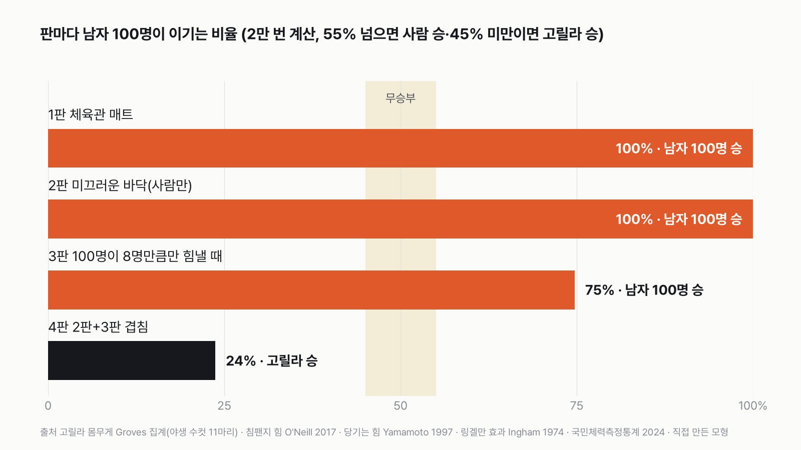
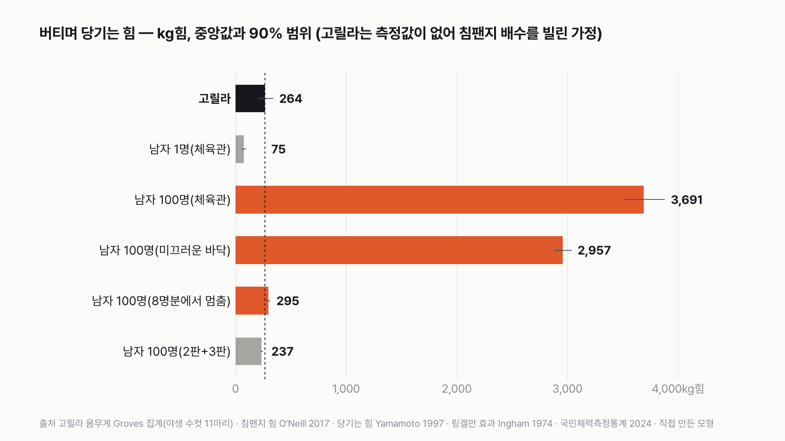
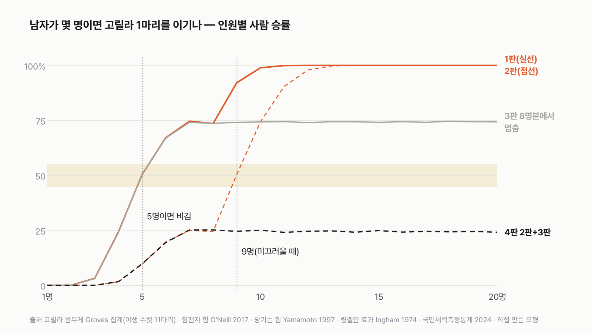
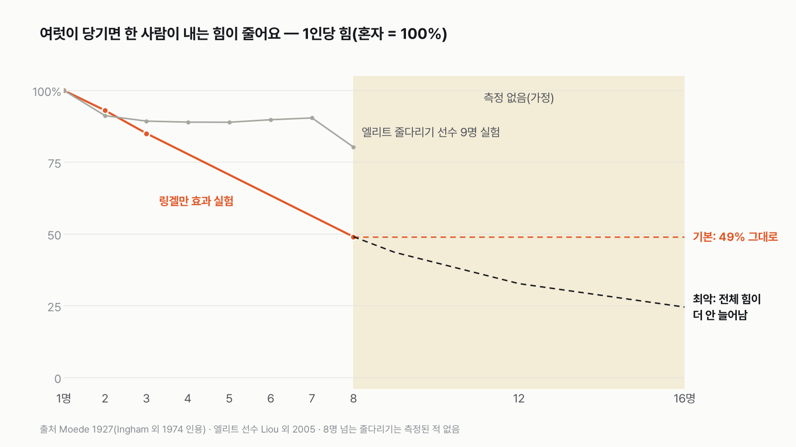

수컷 고릴라 1마리 vs 성인 남자 100명, 줄다리기하면 누가 이길까
결과를 보기 전에 먼저 골라 주세요. 투표하면 독자 예상과 데이터 결과를 나란히 보여 드려요.
- 줄 한쪽에 다 자란 수컷 고릴라 1마리, 반대쪽에 평범한 성인 남자 100명이 있어요. 싸움은 없고 줄다리기만 해요.
- 고릴라는 야생 수컷 몸무게와 유인원 근육 연구, 사람은 국민체력측정통계와 줄다리기 실험 기록으로 맞췄어요.
- 체육관 바닥, 미끄러운 바닥, 사람이 많을수록 힘을 덜 쓰는 '링겔만 효과'까지 네 판으로 겨뤘어요. 투표하면 결과가 바로 아래에 열려요.
조건과 규칙
- 줄다리기만 해요. 줄 하나를 양쪽에서 당기고, 버티며 당기는 힘의 합이 큰 쪽이 이겨요. 줄은 끊어지지 않는다고 봐요.
- 고릴라는 서부로랜드고릴라 야생 수컷이에요. 네 발과 손을 다 써서 버틴다고 봐요.
- 사람은 한국 성인 남자 평균 체력이에요. 운동선수가 아니라 보통 운동화를 신은 평범한 남자예요.
- 네 판: 체육관 매트, 사람만 미끄러운 바닥, 100명이 8명만큼만 힘내는 경우, 그리고 앞의 둘이 겹친 경우예요.
독자 투표
수컷 고릴라 1마리 vs 성인 남자 100명, 줄다리기하면 누가 이길까?
결과 요약
- 4판 3승 1패 → 최종 남자 100명 승이에요. 체육관 매트에서는 남자 100명이 2만 번 중 2만 번 이겨요.
- 고릴라 1마리와 비기는 인원은 체육관 매트에서 남자 5명, 사람만 미끄러운 바닥에서 9명이에요.
- 보통은 사람 압승이에요. 100명이 8명만큼만 힘을 모으고 바닥까지 미끄러울 때만 고릴라가 이겨요. 고릴라 힘은 잰 적이 없어 침팬지 자료로 추정했어요.
그래서? 고릴라 1마리는 평범한 남자 약 3.5명분의 힘이에요. 100명이 제대로 힘을 모으면 상대가 안 돼요. 승부는 100명이 힘을 얼마나 모으느냐에 달렸어요.
독자 예상 vs 데이터 결과
수컷 고릴라 1마리 vs 성인 남자 100명, 줄다리기하면 누가 이길까?
데이터로 보면 남자 100명. 체육관 매트에서는 남자 5명이면 비겨요. 고릴라는 사람만 미끄럽고 100명이 8명만큼만 힘낼 때만 이겨요.

| 판 | 남자 100명 승률 | 비기는 인원 | 승자 |
|---|---|---|---|
| 1판 체육관 매트 | 100% | 5명 | 남자 100명 |
| 2판 미끄러운 바닥(사람만) | 100% | 9명 | 남자 100명 |
| 3판 100명이 8명만큼만 힘낼 때(전체 힘이 8명분에서 멈춤) | 75% | 5명 | 남자 100명 |
| 4판 2판+3판을 겹친 판 | 24% | 몇 명이어도 못 이김 | 고릴라 |
| 최종 | 남자 100명 3승 1패 |
이 규칙과 가정이면 최종 승자는 남자 100명이에요. 네 판 가운데 세 판을 이겼고, 두 판은 2만 번 중 한 번도 지지 않았어요.
계산하면서 가장 의외였던 건 고릴라가 평범한 남자 3.5명분밖에 안 된다는 점이었어요. "사람 10배"라는 말을 자주 들었는데, 측정에 기대어 따져 보니 훨씬 작았어요.
1판 체육관 매트: 남자 100명 승(5명이면 비김)
고릴라가 버티며 당기는 힘은 계산상 약 264kg힘이에요. 264kg짜리 짐을 끌어당기는 힘이라는 뜻이에요. 평범한 남자 한 명은 약 75kg힘이라, 고릴라 1마리는 남자 3.5명분이에요. 남자 100명은 여럿이 당기며 1인당 힘이 절반으로 줄어도 약 3,691kg힘을 내요. 고릴라의 14배예요.
승부를 가른 숫자는 '비기는 인원' 5명이에요. 남자 4명이면 고릴라가 이길 때가 더 많고, 5명이면 반반, 7명이면 사람이 4번 중 3번 이겨요. 100명은 필요한 인원의 20배예요.

고릴라에게 넉넉하게 준 힘
줄다리기에서 버틸 수 있는 힘은 대략 '바닥 마찰 × 몸무게'로 정해져요. 이 단순한 계산으로는 170kg 고릴라가 낼 수 있는 힘이 100~140kg힘이에요. 이 글의 264kg힘은 그 약 2~2.6배나 되는 값이에요. 사람이 실험에서 낸 '몸무게 1kg당 힘'을 고릴라에게 그대로 주고, 거기에 침팬지 배수까지 곱했기 때문이에요. 고릴라 쪽으로 넉넉하게 잡은 값이에요.
몸무게로 보면 차이는 더 커요. 한국 성인 남자(19~59세) 평균 몸무게는 약 77kg이라 100명이면 7.7t, 고릴라 168kg의 46배예요. 바닥을 누르는 무게가 46배라는 뜻이에요.
2판 미끄러운 바닥: 남자 100명 승(9명이면 비김)
바닥이 미끄러우면 사람 쪽만 손해를 보게 했어요. 실험에서 미끄러운 매트에 보통 운동화를 신으면 한 사람의 힘이 약 20% 줄었어요. 고릴라는 손과 발로 버틴다고 보고 힘을 그대로 뒀어요. 고릴라에게 유리한 가정이에요. 그래도 남자 100명은 약 2,957kg힘이라 2만 번 모두 이겨요. 비기는 인원이 5명에서 9명으로 늘었을 뿐이에요.
3판 100명이 8명만큼만 힘낼 때: 남자 100명 승(75%)
가장 큰 가정은 '사람이 100명이면 힘이 얼마나 모이나'예요. 여럿이 당기면 한 사람이 혼자일 때만큼 힘을 내지 않아요. 이걸 링겔만 효과라고 해요. 고전 실험에서 1인당 힘은 2명이면 93%, 3명이면 85%, 8명이면 49%였어요. 8명보다 큰 줄다리기는 아무도 잰 적이 없어요.
그래서 가장 비관적인 경우를 따로 돌렸어요. 7~8명에서 전체 힘이 멈추고, 사람을 아무리 더해도 늘지 않는다고 본 거예요. 그러면 100명이 8명 팀과 같은 약 295kg힘이에요. 고릴라(264kg힘)보다 조금 세서, 사람이 4번 중 3번 이겨요. 반대로 엘리트 줄다리기 선수들은 8명이 당겨도 손실이 20%에 그쳤어요. 이 값을 쓰면 비기는 인원은 4명으로 줄어요.

4판 2판과 3판을 겹친 판: 고릴라 승(사람 24%)
4판은 새 조건이 아니라 2판과 3판을 한꺼번에 건 판이에요. 사람 힘이 8명분에서 멈추고, 그 8명마저 미끄러워 힘이 줄면 약 237kg힘이에요. 고릴라 264kg힘보다 약해서 사람은 4번 중 1번만 이겨요. 이때는 사람이 몇 명이 와도 고릴라를 이기지 못해요.

가정을 바꾸면
고릴라 쪽으로 더 기울일 수도 있어요. 동물원에서 해부할 때 잰 가장 큰 수컷(211kg)에 침팬지 배수의 위쪽 끝(1.5배)을 함께 주면, 3판도 고릴라가 이겨요(사람 0%). 그러면 2승 2패 무승부까지 가요. 그래도 1판과 2판은 사람이 2만 번 모두 이겨요.
사람 쪽으로 기울이면 4판이 뒤집혀요. 고릴라도 미끄러운 바닥에서 사람과 같은 비율로 힘이 줄면 사람이 74% 이겨요. 힘이 몸무게에 그대로 비례하지 않고 몸무게의 2/3제곱에 비례한다고 보면(동물 근력에서 흔히 쓰는 어림) 83%, 고릴라 근육이 사람과 같다고 보면 86%예요. 4판의 고릴라 승리는 꽤 아슬아슬해요. '사람만 미끄러짐', '힘이 몸무게에 정비례', '침팬지 배수' 가운데 하나만 사람 쪽으로 바꿔도 뒤집혀요.
인터넷의 "고릴라는 사람의 10배"는 측정 기록을 찾을 수 없었어요. 그래도 고릴라가 남자 한 명의 10배(약 754kg힘)라고 해 볼게요. 체육관 매트에서는 남자 100명이 여전히 2만 번 모두 이겨요. 고릴라가 100명을 이기려면 남자 한 명의 약 49배는 돼야 해요.
정리하면 남자 100명은 보통의 줄다리기에서 고릴라를 가볍게 이겨요. 뒤집히는 건 100명이 8명만큼만 힘을 모으고, 사람만 미끄러지고, 고릴라를 넉넉하게 잡은 경우가 한꺼번에 겹칠 때예요.
이 숫자는 어디서 왔나요
출처
기준일 남자 악력·몸무게는 국민체력측정통계 2024(2026년 11월 8일 받음)예요. 조건과 판정 규칙은 2026년 11월 8일, 계산하기 전에 정했어요.
Groves 집계표(Williamson·Butynski 2013 인용)
- 고릴라 몸무게
서부로랜드고릴라 야생 수컷 11마리 측정 168kg(145~191kg)
Zihlman·McFarland 2000,American Journal of Physical Anthropology
- 사육 고릴라 해부 기록113:1<61::AID-AJPA6>3.0.CO;2-H)doi:10.1002/1096-8644(200009원본 보기
사육 수컷 172.7kg·211.0kg, 몸무게 중 근육 37%
O'Neill 외 2017,PNAS
- 침팬지 근육의 힘doi:10.1073/pnas.1619071114원본 보기
실험 평균 몸무게 1kg당 사람의 약 1.5배, 빠르게 당길 때의 근육 힘 1.35배, 버티는 힘(등척성)은 사람과 차이 없음
Yamamoto 외 1997, 국제스포츠생체역학회(ISBS) 학술대회 논문집
- 줄다리기 당기는 힘·바닥 마찰
신발·매트별 남자 5초 최대 당기기, 마찰계수
Ringelmann 1913, Kravitz·Martin 1986(doi:10.1037/0022-3514.50.5.936), Ingham 외 1974(doi:10.1016/0022-1031(74)90033-X)
- 여럿이 당길 때 힘 손실(링겔만 효과)
1인당 힘 1명 100%, 2명 93%, 3명 85%, 8명 49%
Liou 외 2005, ISBS 학술대회 논문집
- 줄다리기 선수 팀 힘 손실
엘리트 선수 2~8명 손실 8.8~19.7%
국민체육진흥공단국민체력측정통계
- 성인 남자 악력KOSIS DT_113_STBL_1020302
19~59세 남자 악력 평균 46.2kg, 표준편차 약 7kg
- 성인 남자 몸무게KOSIS DT_113_STBL_1020278
19~59세 남자 평균 약 77kg
세계줄다리기연맹
- 줄다리기 규칙 (TWIF Rules Manual 2021)
한 팀 8명, 체급, 줄 규격
어떻게 셌나요
- 고릴라 힘은 잰 적이 없어요. 고릴라가 줄을 당기거나 무언가를 쥐는 힘을 측정한 논문은 찾지 못했어요. 그래서 가장 가까운 친척인 침팬지 자료를 빌렸어요. 1920년대부터의 실험을 다시 검토한 연구는 침팬지가 몸무게 1kg당 사람의 약 1.5배 힘을 낸다고 정리했어요(실험 평균). 근육 모형으로는 빠르게 당길 때의 힘이 1.35배였고, 가만히 버티는 힘(등척성 힘)은 사람과 차이가 없었어요. 줄다리기는 버티는 쪽에 가까워서, 1.0~1.5배 범위의 위쪽은 고릴라에게 넉넉한 값이에요.
- 고릴라 힘 = 사람의 1kg당 힘 × 1.0~1.5배 × 고릴라 몸무게로 계산했어요. 사람 1kg당 힘은 줄다리기 전용화를 신은 구조대원 기록에서 가져왔어요(고릴라에게 유리한 가정: 가장 좋은 발 디딤). 몸무게는 야생 수컷 145~191kg 사이에서 골랐어요. 고릴라 힘은 90% 범위로 207~335kg힘이에요.
- 사람 한 명의 힘: 일본 구조대원 남자 8명이 실내 매트에서 5초 동안 최대로 당긴 기록이 있어요. 보통 운동화로 92.5~101.4kg힘이었어요. 구조대원은 악력이 양손 평균 59.5kg로 한국 성인 남자 평균(46.2kg)보다 세서, 그 비율(0.78배)만큼 줄였어요. 그러면 보통 남자 한 명은 약 75kg힘(90% 범위 56~95kg힘)이에요.
- 링겔만 효과: 1880년대 프랑스 농공학자 링겔만이 처음 기록했고, 뒤 연구(Ingham 1974)는 실제로는 혼자 당기면서 여럿이 함께 당긴다고 믿게 했을 때도 힘이 줄었다고 보고했어요. 8명 넘는 줄다리기는 측정이 없어서, 기본은 8명이 넘으면 1인당 49%가 그대로라고 봤어요.
- 미끄러운 바닥: 같은 실험에서 미끄러운 매트(마찰계수 0.39)에 보통 운동화를 신으면 당기는 힘이 77~78kg힘으로 떨어졌어요. 이 값을 그대로 썼어요. 고릴라는 손발로 버틴다고 보고 힘을 줄이지 않았어요(고릴라에게 유리한 가정).
- 판정: 판마다 2만 번 계산해 남자 100명이 이기는 비율을 냈어요. 55%를 넘으면 사람 승, 45% 미만이면 고릴라 승, 그 사이는 무승부예요. 네 판 다수결로 최종 승자를 정했어요.
한계 5가지
이 데이터로 말할 수 없는 것
- 고릴라의 힘은 측정값이 아니라 침팬지 연구를 빌린 가정이에요. 고릴라 근육의 종류(빠른 근육 비율)도 측정된 적이 없어요. 다만 몸무게 중 근육 비율은 사육 고릴라 37%, 사람 남자 39~43%로 비슷했어요.
- 구조대원 8명의 당기기 실험을 평균 남자로 바꿀 때 악력 비율 하나만 썼어요. 다리와 허리 힘은 따로 반영하지 못했어요.
- 100명이 한 줄에 매달리려면 줄이 100m 넘게 길어야 해요. 실제 대회는 한 팀 8명이고, 100명이 한 줄에서 박자를 맞춰 당긴 측정 기록은 없어요. 줄이 끊어지거나 늘어나는 것, 고릴라 쪽 줄을 무엇에 묶느냐는 넣지 않았어요.
- 고릴라 손발과 바닥 사이 마찰은 잰 자료가 없어요. 고릴라에게 가장 좋은 발 디딤을 줬어요.
- 실제 고릴라는 줄다리기 규칙을 모르고, 끝까지 버틸 이유도 없어요. 고릴라가 줄을 놔 버리면 사람이 이기니 결론과 같은 방향이에요. 이 글은 '둘 다 최대로 버틴다면'이에요.
새 글 나오면 받아 보기
피드 리더 앱에 이 사이트 주소를 한 번 넣어 두면, 새 글이 올라올 때 앱에 떠요. 가입이나 메일 주소는 필요 없어요.
받는 법 보기
- 피드 리더 앱을 하나 골라요. 새 글을 모아 보여 주는 앱이에요. 예를 들면 Feedly나 Inoreader가 있어요. 둘 다 무료고 웹·휴대폰에서 써요.
- 앱에서 '구독 추가'(+)를 누르고 아래 주소를 붙여 넣어요.
- 끝이에요. 새 글이 올라오면 앱 목록에 떠요.
https://protofu.github.io/opendata-insight/feed.xmlFeedly를 쓴다면 여기를 눌러 바로 추가할 수도 있어요.